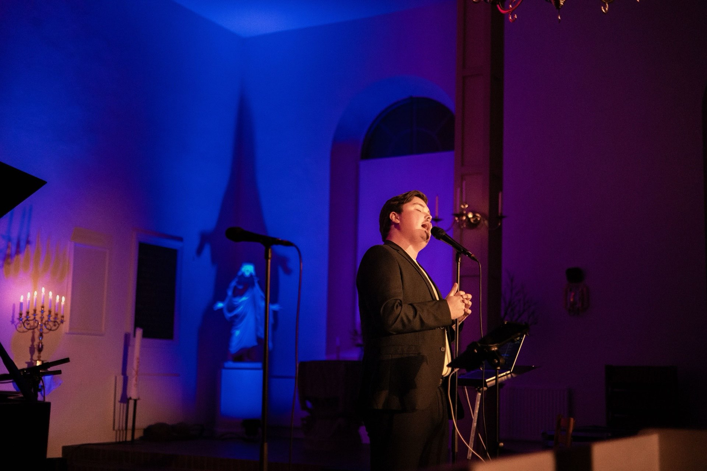
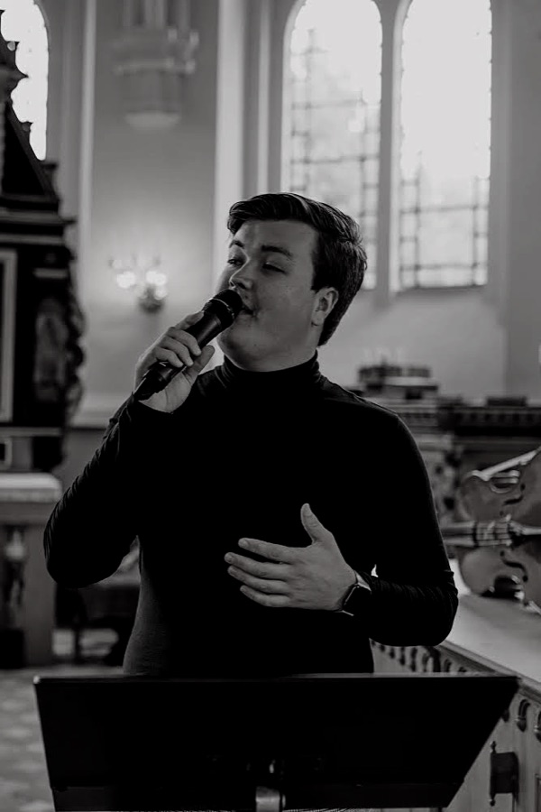
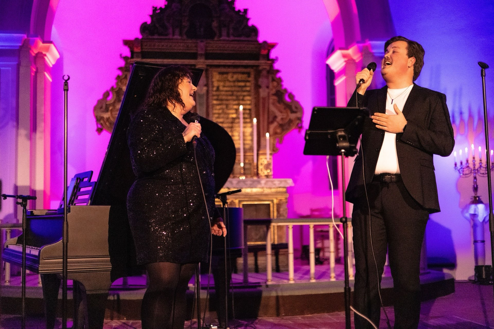
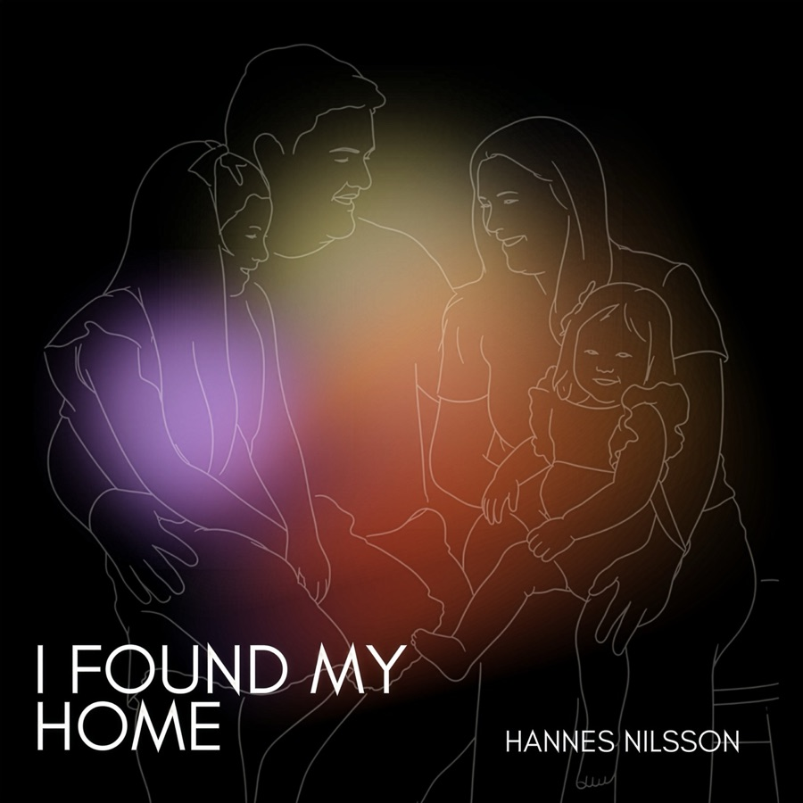

Bröllopssångare
Från vigsel till bröllopsvals — jag hjälper er hitta rätt låtar och gör dem till en personlig, gripande upplevelse för just er dag.

Sångare & Artist i Skåne
Bröllopssångare, dopsolist & begravningssångare — och artist på konserter och event i hela södra Skåne.

Om Hannes
Jag heter Hannes Nilsson och är 25 år. Musiken har varit min största passion sedan jag sjöng på mitt första dop redan 2010 — och sedan dess har jag fått äran att sjunga på över 300 dop, bröllop och begravningar runt om i Skåne.
Jag gillar aldrig att bara ”sjunga låten”. Jag gör varje låt till er egen — med fokus på känslan och texten, så att det blir en version som känns unik för just er dag. Det ger en helt annan närvaro än en inspelad version, och skapar ofta riktiga ”aha‑ögonblick” mitt i ceremonin.
Utöver dop, bröllop och begravningar syns jag flitigt på konserter och andra event i Skåne, och sedan 13 år tillbaka är jag även skådespelare på Sommarteatern i Ystad, där vi varje sommar sätter upp en egenskriven familjemusikal.
Vill du integrera musik på ett minnesvärt sätt i din ceremoni eller ditt event — tveka inte att höra av dig.
Tjänster
Jag anlitas ofta som solist på dop, bröllop och begravningar, samt som artist vid konserter och andra evenemang runt om i södra Skåne.
Från vigsel till bröllopsvals — jag hjälper er hitta rätt låtar och gör dem till en personlig, gripande upplevelse för just er dag.
Ett dop är en av livets finaste stunder. Jag sjunger de låtar som betyder mest för er familj och bidrar till ett varmt, minnesvärt ögonblick.
Med lyhördhet och respekt hjälper jag er att hedra minnet av en nära och kär, med sång som känns rätt för stunden.
Bokas som artist till konserter, företagsevent, releaser och andra tillställningar — skräddarsytt program efter ert tillfälle.

Vad som ingår
När du bokar mig ingår allt du behöver för ett komplett framträdande — inget krångel, inga överraskningar.
Jag driver eget företag, så betalning sker enkelt via faktura. Pris beror på tillställning och önskemål — hör av dig så får du en kostnadsfri offert.
Få en offertSå går det till
Fyll i formuläret med datum, tid och plats — det tar en minut. Fler detaljer kan vi fylla i tillsammans efteråt.
Jag återkommer personligen, svarar på frågor och ger förslag på låtar som passar ert tillfälle.
Du får en tydlig offert utan överraskningar. När allt känns rätt bokar vi in dagen.
Jag sköter reptid, förberedelser och utrustning — ni behöver bara vara på plats och njuta.

Lyssna
Lyssna på senaste låten, eller hitta inspiration inför er egen ceremoni i spellistorna nedan.
Svårt att komma på låtar till bröllopet, dopet eller begravningen? Här är tips på låtar jag ofta sjunger:
Kontakt
Fyll i formuläret så öppnas ett förifyllt mail till mig — enkelt och smidigt. Ju mer jag vet om datum, tid och plats, desto snabbare kan jag återkomma med en offert.
Observera: detta är en förfrågan, inte en bokning. Jag återkommer så fort jag kan för att bekräfta tillgänglighet och skicka en offert.